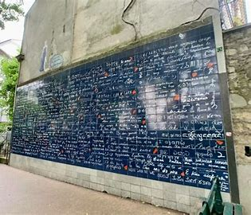

DÃa 1: Torre Eiffel, Trocadero, Campos de Marte...
Itinerario detallado:
- 🚠Coger autobús C en Saint-Michel y nos bajamos en la Torre Eiffel.
- 🕣 A las 8:30 como tarde en la parada de TER. Ver mapa
- Torre Eiffel 🫠Entradas para la Torre Eiffel a las 9:30. Comprar las entradas el 01/05, 15/05 o 01/06.
- 🕥 Sobre las 10:30 vamos al Trocadero. Antes de llegar, parar en el embarcadero de después del rÃo: Ver mapa
- 🕦 A las 11:30 vamos a la Torre Eiffel, Campos de Marte y cruzamos a Los Inválidos. Ver mapa
- 🕒 El paseo será de unas 2 horas (13:30).
- 🕠A las 17:30 vamos al Moulin Rouge. Ver mapa
- 🕕 A las 18:00 vamos hacia el Funicular de Montmartre pasando por el Muro de los Te Amo 
- 🚡 Después del funicular (entra en el precio de la red de transporte) vamos a la Plaza de los Pintores.
- 🕗 Sobre las 20:00 a la BasÃlica y vemos la BasÃlica de Montmartre.
- 🨠Después de la basÃlica, volvemos al hotel. Si hay ganas, bajamos en bus a la Torre Eiffel y otro bus al hotel para verla de noche.